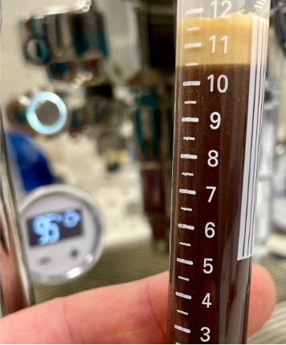
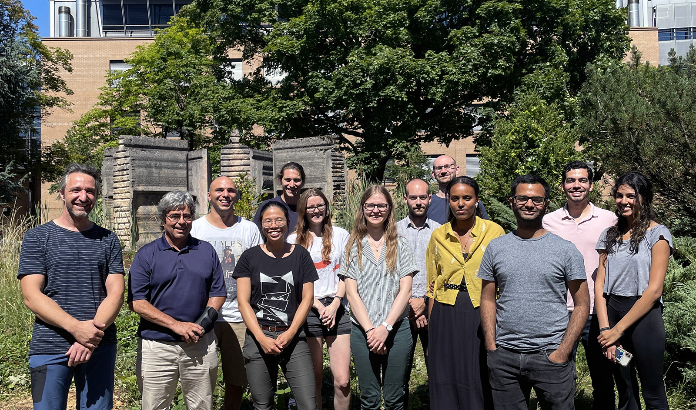
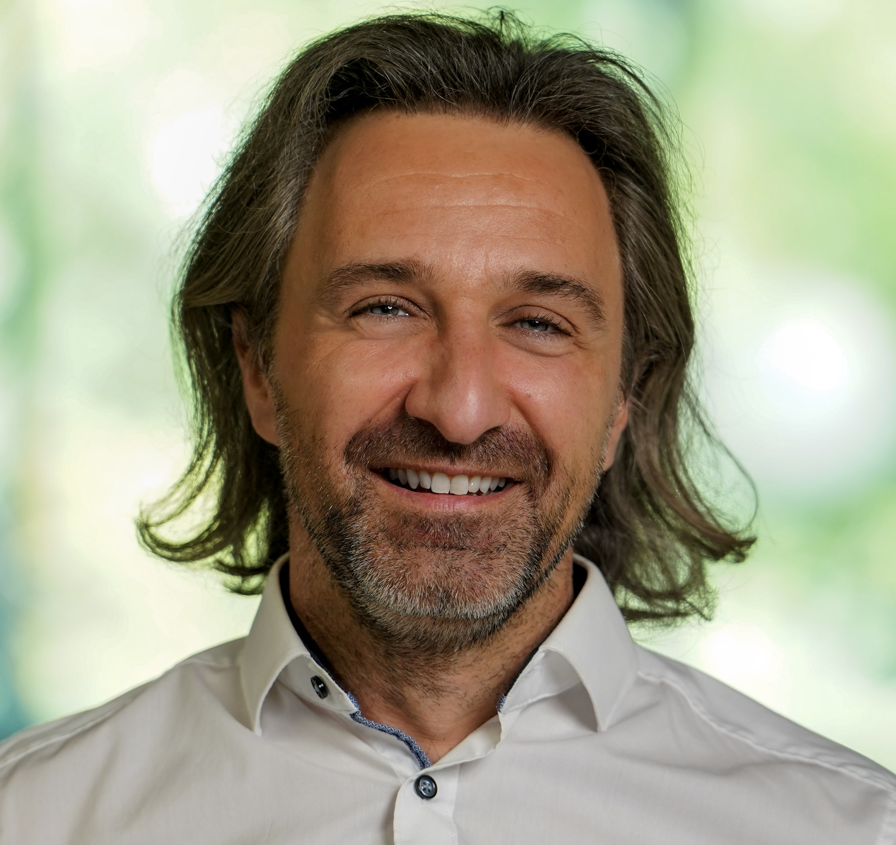

Biocolloids Laboratory
Colloid and interface science for food and health.
Department of Chemistry, University of Fribourg
Part of the Food Research and Innovation Center (FRIC)
We study how molecular interactions, self-assembly, and confinement shape biological and bio-inspired materials across length and time scales.


Research
Discovering universal structure–property relationships across functional materials.
The laboratory combines physical chemistry, soft matter science, and advanced structural characterization to connect molecular interactions with material structure and function.
The Biocolloids Laboratory combines physical chemistry, soft matter science, and advanced multimodal characterization to understand how molecular interactions give rise to the structure, dynamics, and function of complex materials.
Our research spans systems ranging from milk and lipid assemblies to antimicrobial interfaces, polymers under nanoconfinement, and even everyday materials such as espresso coffee. Although these systems appear very different, they are governed by common physical principles that control self-assembly, phase behaviour, transport, and interfacial phenomena.
Using X-ray scattering and diffraction together with spectroscopy, microscopy, rheology, and complementary techniques, we investigate materials across multiple length scales—from molecules and nanostructures to cells and macroscopic functionality. Wherever possible, experiments are performed under in situ or operando conditions to capture materials as they evolve.
Ultimately, our goal is to uncover universal structure–property relationships that enable the rational design of next-generation functional materials for food and health.
Featured research
Four windows into the lab.
Selected projects illustrate how the group moves between fundamental physical chemistry, complex materials, and advanced methods.
People
The people behind the science.
The group brings together backgrounds in physical chemistry, materials science, food science, scattering, and microscopy.

Laboratory infrastructure
From laboratory SAXS to live interfaces.
In-house instruments support routine and time-resolved work. Synchrotron and neutron facilities extend these capabilities to buried interfaces and multiscale structural dynamics.
News & events
Research stories beyond the journal page.
Selected articles, outreach features, and upcoming meetings. Current short updates are also shared on LinkedIn ↗.
Publications & editorial work
Publications and special issues.
Our publications and selected editorial activities are linked below.
Group leader
Prof. Dr. Stefan Salentinig

Full Professor of Physical Chemistry at the University of Fribourg.
About
Stefan Salentinig is Full Professor of Physical Chemistry at the University of Fribourg, where he leads the Biocolloids Laboratory.
His research combines colloid and interface science, soft matter, and advanced structural characterization to understand and engineer biological and bio-inspired materials for food and health.
Alongside research and teaching, he contributes to academic leadership and the international colloid and interface science community.
Academic journey
Building an independent research programme
After completing his PhD in Physical Chemistry at the University of Graz in 2010, he held research and academic positions at CSIRO and Monash University in Australia. In 2015, he established and led the Biomolecules at Surfaces Group at Empa, developing an interdisciplinary research programme at the interface of soft matter, materials science, and biology. In 2019, he joined the University of Fribourg to establish the Biocolloids Laboratory and was appointed Full Professor in 2023.
Leadership & service
Academic and scientific contributions
Selected institutional, scientific, editorial, and evaluation roles alongside research and teaching.
Academic and scientific leadership
- President, Department of Chemistry
- Founding Director & Co-Director, Food Research and Innovation Center (FRIC)
- President, Swiss Society for Surfaces and Interfaces (SAOG)
- Executive Board Member, NCCR Bio-Inspired Materials
- Management Committee Member, COST Action SNOOPY (CA23111)
Editorial, evaluation, and innovation activities
- Section Editor, Current Opinion in Colloid & Interface Science
- Editorial Advisory Board Member, ChemFoodChem
- Member, BRIDGE Evaluation Committee (SNSF–Innosuisse)
- Steering Committee Member, Coffee Innovation Group, Swiss Food Research
Join the lab
Interested in working with us?
We are interested in hearing from motivated PhD students, postdoctoral researchers, visiting scientists, and collaborators with backgrounds in physical chemistry, soft matter, materials science, food science, chemical engineering, or related fields.
Get in touch